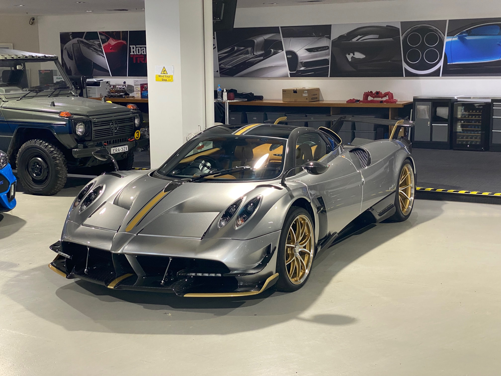
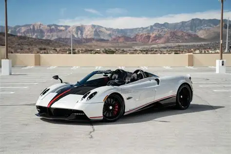
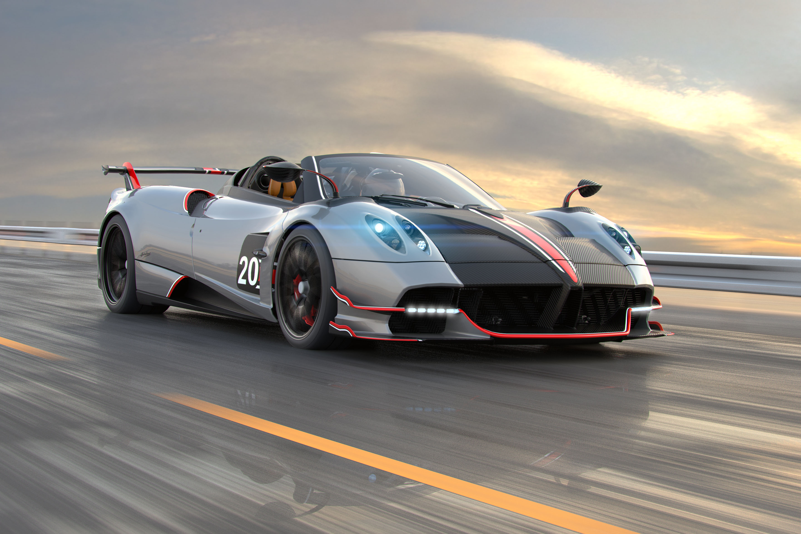
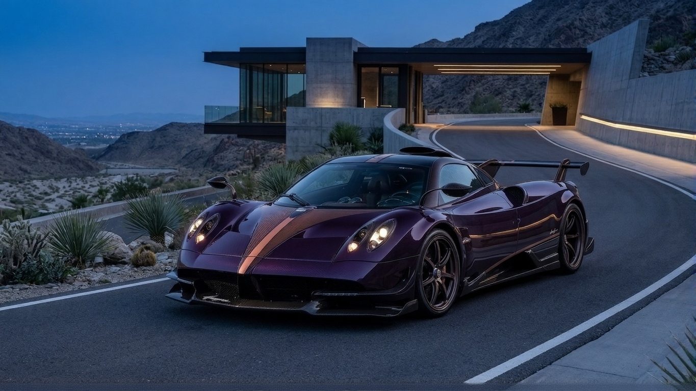
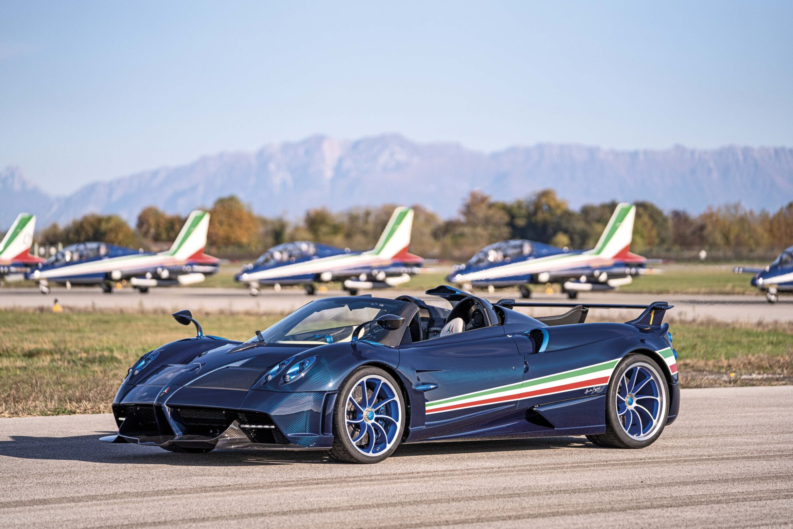
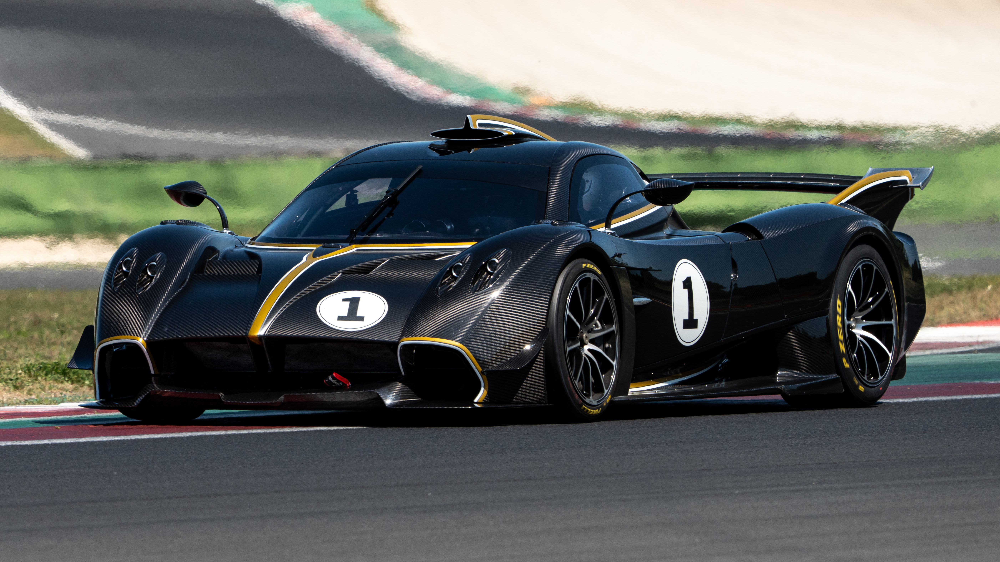
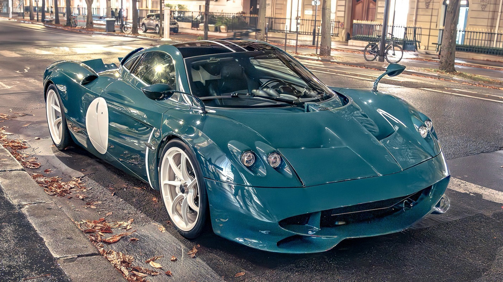
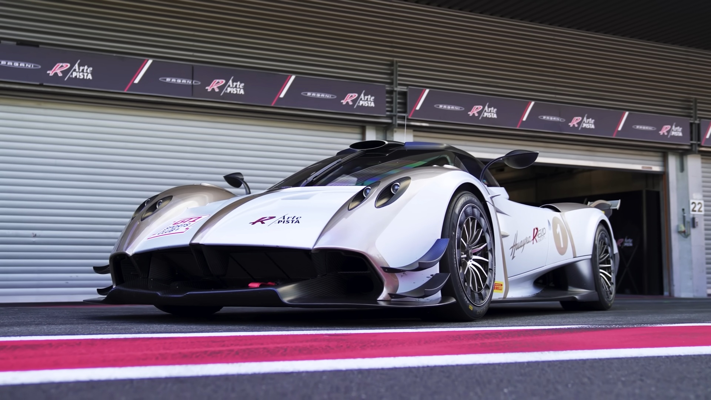

THE HUAYRA LINEAGE

HUAYRA COUPÉ
The original God of Wind. A masterpiece blending Renaissance art with modern science. Introducing active aerodynamics to the world of the hyper-performance elite. The iconic gullwing doors open to a cabin of sculpted leather and Swiss-watch precision. Every line is shaped by the air, designed to glide through the atmosphere with ease. A revolutionary carbo-titanium monocoque provides unmatched structural integrity. This is the definitive marriage of mechanical soul and aerodynamic grace.

HUAYRA BC
Raw power and track-focused evolution, dedicated to Pagani's first friend and customer.
The BC represents a radical departure in weight reduction and structural stiffness.
Featuring a specialized Xtrac 7-speed gearbox for lightning-fast engagement.
Every spoiler and splitter is tuned to generate immense downforce at high speed.
It is a tribute to Benny Caiola’s passion, built for the most demanding circuits.
A lightweight warrior that refuses to sacrifice the elegance of its lineage.

HUAYRA ROADSTER
Open-top freedom crafted with an engineering paradox: lighter than the coupe.
Developed to deliver uncompromised hypercar rigidity without a fixed roof.
The removable hardtop features a central glass panel for a panoramic skyward view.
Redesigned suspension and Carbo-Triax materials enhance the tactile driving feel.
An artistic exploration of how the wind interacts with the human senses.
It is a sculptural triumph that captures the very essence of the Mediterranean sun.

HUAYRA ROADSTER BC
The apex of the Huayra road-going evolution, combining open air with BC ferocity. Featuring a unique six-exhaust pipe system that sings a visceral V12 anthem. New aerodynamic breakthroughs allow for lateral acceleration of up to 1.9g. Every interior detail is handcrafted to the owner's most specific desires. It represents the absolute pinnacle of Pagani’s technical and aesthetic research. A symphony of carbon fiber and titanium designed for the ultimate connoisseur.

PAGANI IMOLA
A rolling test bed for extreme technology and raw aerodynamic efficiency. Named after the legendary circuit where its soul was forged and tuned. The bodywork is a complex landscape of fins and intakes designed for cooling. Introduces "Acquarello Light" paint technology to save every possible gram. A hyper-exclusive machine built for those who live on the edge of performance. It is Pagani's most severe expression of track-ready mechanical engineering.

HUAYRA TRICOLORE
A highly limited edition tribute to the Frecce Tricolori aerobatic patrol. Drawing direct inspiration from the Aermacchi MB-339A jet aircraft. The exterior features a specialized Pitot tube to measure air speed in real-time. A unique blue carbon-fiber weave mirrors the deep colors of the Italian sky. Inside, aviation-grade materials and turbine-style wheels complete the theme. A breathtaking homage to national pride and the spirit of flight.

HUAYRA R
A pure, track-only hypercar powered by a screaming naturally aspirated V12. Designed without any restrictions to celebrate the raw essence of motorsport. The V12-R engine revs to a staggering 9,000 RPM, echoing the sounds of F1 history. The structural carbon monocoque integrates the seats for maximum safety and feel. An obsessive focus on weight results in a vehicle that weighs barely a metric ton. This is the most extreme, unadulterated performance Pagani has ever unleashed.

HUAYRA CODALUNGA
A bespoke longtail creation inspired by the elegant racers of the 1960s. Designed by Pagani Grandi Complicazioni for a select group of collectors. The extended rear profile optimizes airflow while creating a sleek silhouette. The interior uses aged leathers and woven aluminum for a vintage racing feel. Clean, flowing lines replace the aggressive aero-elements of its siblings. It is a moving sculpture that bridges the gap between classic era and future.

HUAYRA R EVO
The ultimate open-top track hypercar, pushing boundaries of downforce. Featuring a long-tail aerodynamic design optimized for high-speed stability. The increased power output is matched by an even more aggressive soundtrack. The "pop-off" roof panels allow the driver to hear the V12-R in its full glory. Every component has been evolved from the Huayra R for even faster lap times. This is the final, most powerful evolution of the Huayra track program.